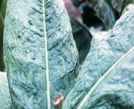
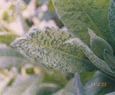
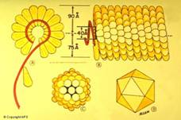

TOBACCO :: MAJOR DISEASE :: TOBACCO MOSAIC
Tobacco mosaic - Tobacco mosaic virus(TMV)
Symptoms
The disease begins as light discoloration along the veins of the youngest leaves. Soon the leaves develop a characteristic light and dark green pattern, the dark green areas associated more with the veins, turning into irregular blisters.
The early infected plants in the season are usually stunted with small, chlorotic, mottled and curled leaves. In severe infections, the leaves are narrowed, puckered, thin and malformed beyond recognition, Later, dark brown necrotic spots develop under hot weather and this symptom is called “Mosaic burn” or “Mosaic scorching”.
|  |  |
Pathogen
The disease is caused by Tobacco mosaic tobamovirus. It is a rigid rod measuring 300 X 150-180 nm with a central hollow tube of about 4nm diameter with ssRNA as its genome.
|  |
Disease cycle
The virus spreads most rapidly by contact wounds, sap and farm implements and operators. The virus remains viable in the plant debris in the soil as the source of inoculum as the longevity of the virus is very high. It is capable of remaining inf
ective when stored dry for over 50 years. The virus has a wide host range, affecting nearly 50 plant species belonging to nine different families. The virus is not seed-transmitted in tobacco but tomato seeds transmit the virus. No insect vector known to transmit the virus.
Management
- Remove and destroy infected plants.
- Keep the field free of weeds which harbour the virus.
- Wash hands with soap and running water before or after handling the plants or after weeding.
- Prohibit smoking, chewing and snuffing during field operations.
- Spray the nursery and main field with botanical leaf extracts of BougainvilleaorBasella albaat 1 litre of extract in 150 litres of water, two to three times at weekly intervals.
- Adopt crop rotation by growing non-host plants for two seasons.
- Grow resistant varieties like TMV RR2, TMV RR 2a and TMV RR3.